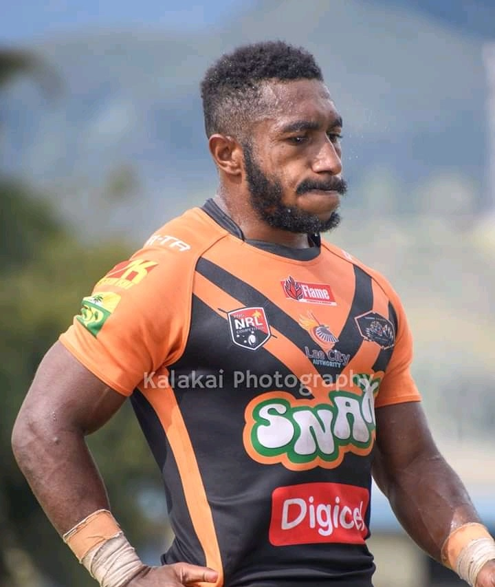

SPORTS
Importance of Sports
Having known and experienced the importance of sports, World’s No.1 professional tennis player, Billie Jean King once said: “Sports teaches you character, it teaches you to play by the rules, it teaches you to know what it feels like to win and lose – it teaches you about life.”
Life Lesson
All life lessons could be learnt while playing sports. Since it builds up good habits, confidence, discipline, and makes one strong, the importance of sports could never be denied. Only few sportsmen emerge victorious and win laurels, but the sportsmanship developed through the learning, gives all players the opportunity to become great leaders with strong team spirit, useful for the society.
Sports is the seed for the overall development of one’s personality. Therefore, the importance of sports should never be underestimated. It should be given due importance at par with education and career.